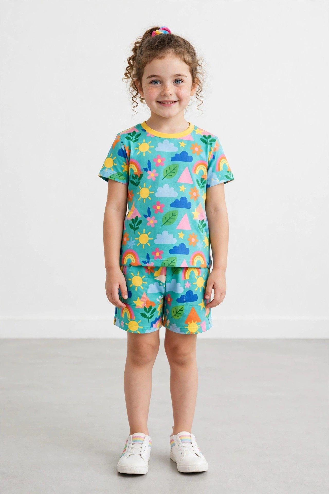

A baby cannot tell you the seam itches. A two-year-old will not explain that the snap digs in when she sits down, or that the label at the back of her neck scratches all day. She will cry, or she will refuse to wear it, and her parent will blame the brand. Not the factory. The brand. That is the whole difference with kids clothing, and it is why this guide, from a kids clothing manufacturer in Sialkot, Pakistan, starts with a checklist instead of a sales pitch. In every other division we make, the customer can say what went wrong. Here, the wearer cannot complain afterwards, so the checks have to happen before the order. We make newborn-to-13 ranges every week, eastern and western, and this is the list we run through with every kids wear buyer before a single piece is cut.
Most of it is what we ask in the first message anyway. The decisions are fewer than on an adult range, but each one carries more weight, because a mistake lands on a child and comes back as a lost customer. Read the checklist first. The sections after it explain the checks that most buyers get wrong.

Ten things. If a factory cannot answer all ten plainly, keep looking. If you are the buyer, run through them before you send your design, not after the sample arrives.
Start with the fabric, because everything else is decoration. A baby romper lives against the skin all day, so the cotton has to be soft, combed, and pre-washed before it is cut. Pre-washing is the part buyers skip, and it decides whether the garment still fits after the first wash at home. A romper that fits on Monday and does not fit on Friday, after one wash, is not a sizing mistake. It is a fabric mistake, and it was made before the cutting started. Ask the factory two things in writing: what the fabric is, and whether it was pre-shrunk. If the answer to the second question is vague, the first answer does not matter much.
Fabric weight matters too, and it changes with the piece. A romper wants a light, soft single jersey. A toddler hoodie wants a heavier fleece that holds its shape through play and washing. A waistcoat for an Eid set wants structure, and the lining has to be as soft as the outside, because a stiff lining against a child's chest ruins a beautiful outer fabric. Dyes are the quiet risk. A bright print that looks perfect on the roll can bleed in the first wash and stain the rest of the load, and the parent finds out, not the buyer. We check colour after washing, not before. In our experience, most buyers get this wrong: they approve the sample dry and never wash it once. Wash the sample. Then approve it. We would rather lose an order than cut a baby romper in a fabric I would not put on a child of my own.
Snaps, buttons, zips, drawstrings, embroidery. On an adult jacket these are details. On a child's garment they are the whole risk, because small children pull at things, chew things, and fall asleep in things. A snap has to close with one press and stay closed, and it has to survive a pull test, not just look neat. A button has to be sewn through properly, with a shank that keeps it clear of the fabric, so it does not work loose in the wash. A zip needs a guard behind it, so it never catches skin when a parent dresses a wriggling baby in a hurry.
Drawstrings are where we take a plain position: we do not put cords at the neck of small children's styles, and if a design arrives with one, we say so and change it, usually to a fixed tie at the waist or an elasticated neck. A neck cord on a toddler is a risk no design is worth. Embroidery needs the same thinking. The front of embroidery looks beautiful. The back of it, against a baby's chest, can feel like sandpaper, so the backing has to be covered with a soft layer, and the stitches have to be dense enough that no loose thread ends stick out. Sequins, beads and glued trims are the same story. If it can come off, it will come off, usually in a washing machine, and sometimes in a child's hand. Stitch it, or leave it off.
Children do not grow in straight lines, and a size run that jumps two years at a time leaves gaps where your customers actually shop. We grade across four bands, newborn from 0 to 12 months, toddler from 1 to 3 years, kids from 4 to 8, and pre-teen from 9 to 13, and each band needs its own pattern, not an adult pattern scaled down. A scaled-down adult tee has the wrong shoulder, the wrong armhole and the wrong body length for a child, and no amount of grading fixes a pattern that started wrong.
Parents also buy with room to grow, which is a different problem. A romper with too much room bunches at the legs. The fit has to allow growth without swallowing the child, and that is a pattern decision, not a size decision. Ask for the size chart in centimetres, chest and length at least, for every size in the run, and check it against a garment your customers already own and like. Eastern fit adds its own layer: a kurta has to fall at the right length, a waistcoat has to sit properly over it, and a shalwar needs room at the seat for a child who sits, runs and climbs in it. Western tees and jeans are more forgiving. Eastern sets are not.
Our eastern range covers kurta shalwar sets, embroidered waistcoat sets, shalwar kameez, net frocks and Eid and festive sets, with hand finishing where the design needs it. Our western range covers rompers, starter sets, graphic tees, dungarees, jeans, dresses, pajama sets, hoodies, tracksuits and co-ord sets. Different looks, same factory steps: your design, a sample, your approval, then the run. A buyer ordering both ranges in one season is common, and the two can share a size run and a label set.
I still pull every snap on a baby romper before it goes into the box. Not every tenth piece, every snap on the sample, and a pull test on the run. It takes two minutes. I also run my thumb along the inside of every seam on a newborn set, because that is where a rough edge hides, and I check the label position myself, because a label at the back of the neck is the first thing a mother feels when she dresses her child. The machines do the sewing. The hands do the checking. That is how it has always been in our factory, and it is the part of the job I will not hand to a checklist.
A buyer sent us a reference romper from a brand she liked, soft cotton, a simple print, and asked for the same in her own label. The first sample fit perfectly. She approved it the same day. Then she washed it once, the way a parent would, and it came back a size smaller. The fabric had never been pre-shrunk. We re-cut the run in pre-washed cotton, added a wash test to the sample check, and the second sample held its size after three washes. The order went ahead, and she still orders from us. The lesson cost us a week and one sample. It would have cost her a whole range if it had reached her customers, because a parent who buys a romper that shrinks does not write to the factory. She buys a different brand next time.
A trial run starts at 15 pieces of one style, and the sizes can be mixed inside that run, so a first order can cover the sizes you actually sell without committing to a full range. Once your design and the details are agreed, the sample is usually ready in 7–10 working days, and that is the cheapest week of the whole order. One round of changes at this stage costs a day. The same change after cutting costs the run.
Share the date the goods have to be in your customers' hands at the start, and the run can be planned backwards from it, shipping to North America or Europe included. We also supply locally across Pakistan for retailers. Nothing in the run carries our name unless you ask for it. The labels, the size tags and the packing are yours, and the country tag reads "Made in [your country]" if you ask for it, otherwise "Made in Pakistan". On a larger order, a third-party pre-shipment inspection puts an independent report behind the shipment, which is worth having when the goods are going to shelves you cannot visit yourself.
Your first order starts with one message: your design or tech file, or a reference piece and a clear photo, the age range, your sizes and the date. Send it on WhatsApp at +92-339-5099397 or by email at safettech@outlook.com, and we will come back with an exact quote and a sampling plan. Our kids & baby wear range covers rompers to waistcoat sets, newborn to 13 years, made to your design in Sialkot, Pakistan.

Kids wear is the one range I check twice before it leaves the table, because the person wearing it cannot tell us what is wrong. Send me your design and I will look at it the same way I look at every piece that leaves this factory.
Ahmed Zahid
Founder & Director, Safe-T TECH International · Sialkot, Pakistan
Send your design today — samples in 7–10 days, trial orders from 15 pieces per style, your labels on every piece.